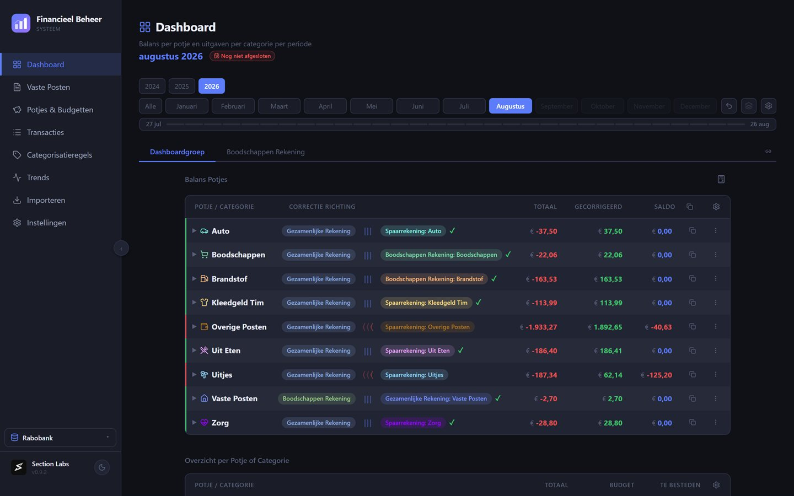
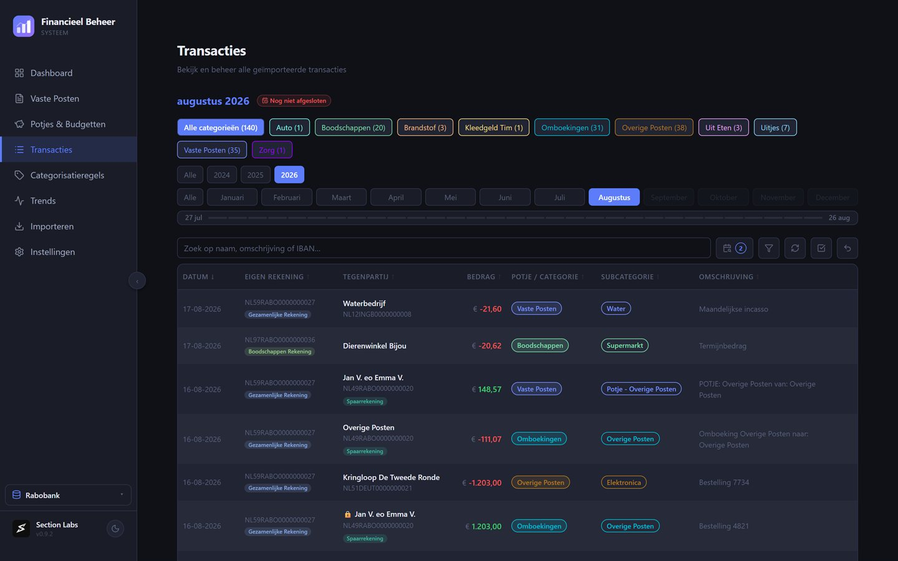
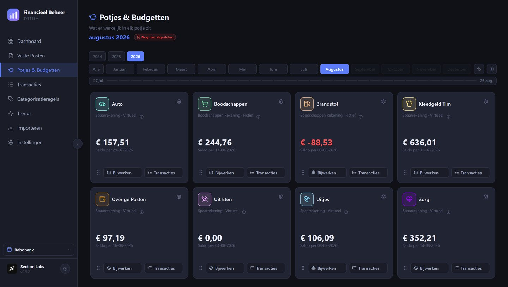
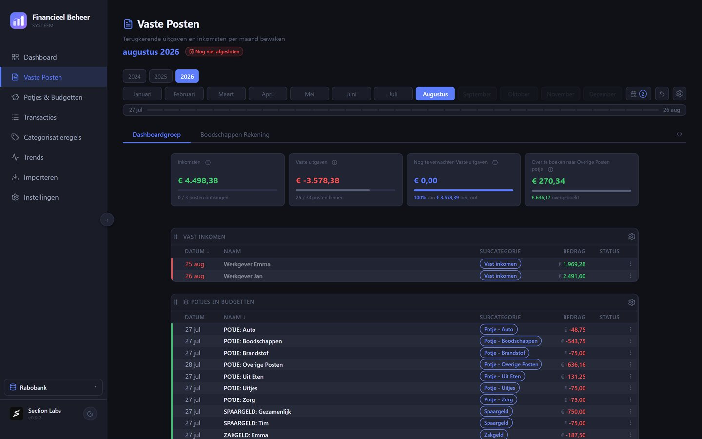

Section Labs
Section LabsGrip op je geld,
zonder spreadsheet-goeroe te zijn.
FBS, het Financieel Beheer Systeem, is een Nederlandstalig programma voor je eigen financiën. Je leest de bestanden in die je bij je bank downloadt, en FBS maakt daar een overzicht van. Alles blijft op je eigen computer staan.
Gratis. Geen account nodig. Voor Rabobank en ABN AMRO.

Je boekingen, ingedeeld
Sleep het bestand van je bank in FBS. Rabobank en ABN AMRO worden herkend, en boekingen die je al had worden overgeslagen.
Elke boeking krijgt een categorie. Dat doe je één keer per winkel of instantie: daarna deelt FBS de volgende keer zelf in.

Potjes die kloppen met de werkelijkheid
Zet geld opzij voor de auto, de boodschappen of een uitje, op een spaarrekening of alleen op papier. FBS houdt bij wat er werkelijk in zit.
Betaal je iets van de verkeerde rekening, dan laat Balans Potjes zien hoeveel je moet overboeken om het recht te zetten.

Vaste lasten in de gaten
Huur, verzekeringen, abonnementen: FBS weet welke er elke maand horen te komen en laat zien welke nog ontbreken.
Wijkt een bedrag af van vorige maand, dan zie je dat meteen.

Welke banken werken met FBS?
FBS leest het bestand dat je zelf bij je bank downloadt. Van Rabobank en ABN AMRO is dat bestand getest en nagekeken.
Rabobank
Download je transacties als CSV.
ABN AMRO
Kies bij het downloaden van je afschrift voor CAMT.053.
Andere banken
Nog niet ondersteund. Biedt je bank CAMT.053 aan, dan kun je het proberen: bedragen en datums komen goed binnen, maar namen en omschrijvingen kunnen rommelig zijn. FBS waarschuwt je daar dan voor.
Nieuw in deze versie
Je gegevens blijven bij jou
Geen cloud
Er gaat niets naar een dienst van iemand anders. Je gegevens staan op je eigen computer, en verder nergens.
Geen koppeling met je bank
FBS leest alleen de bestanden die je zelf bij je bank ophaalt. Het logt nergens voor je in.
Zelf back-ups
FBS maakt zelf back-ups op je computer. Een tweede kopie kan naar een map die jij kiest, desgewenst versleuteld met een wachtwoord.
Download FBS
Windows
Windows 10 of 11, 64-bit. Getest op Windows 11. Voer het gedownloade installatiebestand uit.
macOS
macOS 14 (Sonoma) of nieuwer, voor Intel en Apple Silicon. Getest op macOS 15 en 26. Open het gedownloade schijfbestand en sleep FBS naar Programma's.
Updates
Je hoeft niets meer te downloaden. FBS meldt zelf wanneer er een nieuwe versie is en werkt zichzelf bij.
Een waarschuwing bij het downloaden of installeren?
Waar gaat de waarschuwing over? Windows en macOS kijken of een programma is ondertekend: een digitale handtekening waarmee de maker aantoont wie hij is. FBS heeft die nog niet. Je computer kan dus niet controleren wie het bestand gemaakt heeft, en waarschuwt daarom. Het betekent niet dat er een virus of iets anders verdachts in het bestand is gevonden. Meldt je browser dat het bestand niet vaak wordt gedownload, dan komt dat doordat FBS nog nieuw is.
Waarom nog geen handtekening? FBS wordt gemaakt door één ontwikkelaar. Een handtekening kost geld: voor de Mac ongeveer honderd euro per jaar, voor Windows honderd tot een paar honderd euro per jaar. Dat loont nu nog niet, maar het staat op de planning voor als FBS groeit.
Wat moet je doen?
Windows
- Zegt je browser dat het bestand niet vaak wordt gedownload? Ga in het downloadoverzicht met de muis over het bestand, klik op de drie puntjes en kies Behouden. Volgt er nog een venster van Microsoft Defender SmartScreen, klik dan op het pijltje naast Verwijderen en kies Toch behouden.
- Open het gedownloade installatiebestand.
- Verschijnt er een blauw scherm met Windows heeft uw pc beschermd? Klik op Meer informatie en daarna op Toch uitvoeren.
- Volg de stappen van het installatieprogramma. Daarna staat FBS in het startmenu.
macOS
- Open het gedownloade schijfbestand en sleep FBS naar Programma's.
- Open FBS vanuit Programma's. De eerste keer meldt macOS dat het de app niet kan controleren. Klik die melding weg.
- Open de Systeeminstellingen, ga naar Privacy en beveiliging en scrol naar beneden. Daar staat een melding over FBS met een knop om de app toch te openen. Klik daarop en bevestig.
- Vanaf nu opent FBS gewoon.
Dit hoeft maar één keer. Download FBS alleen via deze pagina of via GitHub, dan weet je zeker dat je het echte bestand hebt.
Veelgestelde vragen
Is FBS echt gratis?
Ja. Geen abonnement, geen advertenties en geen betaalde versie met meer mogelijkheden. Wil je de ontwikkeling steunen, dan kan dat met een vrijwillige bijdrage.
Werkt FBS op mijn telefoon of tablet?
Nee. FBS is een programma voor de computer, voor Windows en macOS. Een versie voor telefoon of tablet is er niet.
Waar staan mijn gegevens?
In een map op je eigen computer, samen met de interne back-ups. Op Windows is dat %LOCALAPPDATA%\FBS\gegevens, op de Mac Library/Application Support/nl.sectionlabs.fbs/gegevens in je thuismap. Library heet in een Nederlandse Finder Bibliotheek en is standaard verborgen; je komt er het snelst via Ga naar map (Shift-Command-G). FBS stuurt je financiële gegevens nergens heen: niet naar ons, niet naar een cloud en niet naar je bank.
Hoe zit het met back-ups?
Automatisch: FBS maakt bij het starten en afsluiten zelf een interne back-up op je computer. Daarnaast kan het een externe back-up wegschrijven naar een map die jij kiest, bijvoorbeeld een USB-stick, je NAS of een map van je eigen cloudopslag, desgewenst versleuteld met een wachtwoord. De interne back-up staat op dezelfde computer als je gegevens: gaat die computer stuk, dan ben je hem ook kwijt. Zet daarom ook een externe back-up aan.
Zelf, op elk moment: bij Instellingen, onder Back-up & herstel, maakt de knop Download backup direct een volledige back-up die je opslaat waar je wilt. Handig vlak voordat je iets groots verandert.
Terugzetten doe je op dezelfde plek in de app.
Ik stap over op een nieuwe computer. Hoe neem ik alles mee?
Installeer FBS op de nieuwe computer en zet daar je back-up terug. Heb je de back-up versleuteld, houd dan het wachtwoord bij de hand.
Moet ik zelf nieuwe versies downloaden?
Nee. FBS meldt zelf wanneer er een nieuwe versie is en werkt zichzelf bij.
Hoe verwijder ik FBS?
Windows: verwijder FBS zoals elk ander programma, via de lijst met geïnstalleerde apps in de instellingen van Windows. Je gegevens blijven daarbij standaard staan, zodat een nieuwe installatie ze terugvindt. Wil je alles wissen, vink dan tijdens het verwijderen App-gegevens verwijderen aan; FBS vraagt daarna nog één keer of je het zeker weet.
macOS: sleep FBS uit Programma's naar de prullenmand. Je gegevens blijven staan in de map Library/Application Support/nl.sectionlabs.fbs in je thuismap (in Finder heet Library Bibliotheek); gooi die ook weg als je alles wilt wissen.
Back-ups die je zelf naar een andere map hebt laten schrijven, blijven in beide gevallen staan.
Werkt FBS met mijn bank?
FBS leest de bestanden van de Rabobank en ABN AMRO. Bij andere banken kan het werken als ze CAMT.053 aanbieden, maar dat is nog niet nagekeken. Zie Welke banken werken met FBS?
Ik heb een vraag, een idee of vond een fout.
Gebruik Feedback geven, onderin de zijbalk van FBS. Kies of het om een probleem, een idee of een vraag gaat en beschrijf het in je eigen woorden. Je kunt er meteen een screenshot of een korte opname van je scherm bij maken, of een bestand toevoegen. Persoonlijke gegevens worden daarin standaard afgeschermd, en jij bepaalt wat zichtbaar blijft. De versie van FBS, je systeem en de pagina waar je was stuurt FBS zelf mee. Wil je een antwoord, vul dan je e-mailadres in.
De ontwikkeling van FBS steunen
FBS is gratis. Wil je bijdragen aan de verdere ontwikkeling, dan kan dat met een vrijwillige bijdrage. Je kiest zelf het bedrag.
Je betaalt met iDEAL of een betaalkaart. FBS werkt precies hetzelfde met of zonder bijdrage.